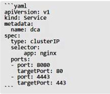
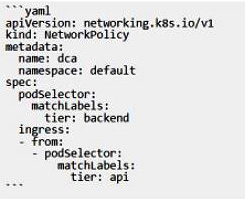

Question 1
Select the three components of a Filter Condition: (Choose three.)
Question 2
SLAs are used to ensure VUL are processed in a timely matter. Which field is used to determine the expected timeframe for remediating a VIT?
Question 3
What is the minimum role required to create and change Service Level Agreements for Vulnerability Response groups?
Question 4
Changes made within a named Update Set in a different application scope:
Question 5
ServiceNow Vulnerability Response tables typically start with which prefix?
Question 6
In regard to the Security Operations Process, which of the following statements defines the “Identify” phase?
Question 7
Which module is used to adjust the frequency in which CVEs are updated?
Question 8
A list of software weaknesses is known as:
Question 9
Vulnerability Response can be best categorized as a ____________, focused on identifying and remediating vulnerabilities as early as possible.
Question 10
If a customer expects to ingest 2 million vulnerabilities during its initial load, which instance size should you recommend?
Question 11
What Business Rule creates a Configuration Item from a Vulnerable Item record?
Question 12
The components installed with Vulnerability Response include:
Question 13
What is the purpose of Scoped Applications?
Question 14
What is the ID associated with the Vulnerability Response plugin?
Question 15
Where can you find information related to the Common Vulnerabilities and Exposures (CVE)?
Question 16
Which one of the following record types can be considered the intersection of Vulnerability source information and CMDB CI records?
Question 17
Which of the following provides a list of software weaknesses?
Question 18
Filter Groups provide a way to:
Question 19
Which module within the Vulnerability Response application could be used to get information from the National Vulnerability Database (NVD) at any moment?
Question 20
Which statement about patching is most correct?
Question 21
The Vulnerability Admin role (sn_vul.admin) can modify Vulnerability Application Properties and can be delegated to the following role(s):
Question 22
sn_vul.itsm_popup is the property that is set to True or False based on the customer desire for a popup when creating a Problem or Change record from a Vulnerability or VI record.
Question 23
Items in the ServiceNow Store are built and supported by:
Question 24
Qualys asset tags can be loaded into a table related to the configuration item and used to support business processes or reporting. Set the Qualys Host parameter of asset_tags to a value of __________ to have asset tag information from Qualys be included in the XML payload.
Question 25
In ServiceNow, which plugin needs to be added to enable Vulnerability Integration with Qualys, Tenable, or Rapid7?
Question 26
In order for Vulnerability admins to configure integrations, they must have the following Role(s):
Question 27
In order to more easily manage large sets of Vulnerable Items, what should you create?
Question 28
This functionality provides a simple way to build criteria once, which can be reused in other platform areas.
Question 29
To facilitate the remediation of a Vulnerable Item what type of item is most commonly used?
Question 30
After closing the Vulnerable Item (VI), it is recommended to:
Question 31
Vulnerability Response is a scoped application; which prefix is attached to all items related to the application?
Question 32
Which Vulnerability maturity level provides advanced owner assignment?
Question 33
Which application provides the opportunity to align security events with organizational controls, automatically appraising other business functions of potential impact?
Question 34
Ignoring a Vulnerable Item:
Question 35
What do Vulnerability Exceptions require?
Question 36
Best Practices dictate that when creating a Change task from a Vulnerable Item, which of the following fields should be used for assigning the Assigned To field on the Change task?
Question 37
Approvals within the Vulnerability Application are created based on:
Question 38
Some customers may have a clearly-defined, well-documented vulnerability exception process and some may even provide a diagram illustrating that process.
What is the main advantage of having this documentation when translating it into a Flow or Workflow?
Question 39
When an approval is rejected for a Vulnerable Item exception, what happens to the State field for that record?
Question 40
What option can be used to close out a Vulnerable Item Record or initiate the Exception Process?
Question 41
What must Vulnerability Exceptions be supplied by default?
Question 42
Which of the following best describes a Vulnerability Group?
Question 43
In order to more easily manage large sets of Vulnerable Items, you would want to create:
Question 44
Which of the following is the property that controls whether Vulnerability Groups are created by default based on Vulnerabilities in the system?
Question 45
What system property allows for the auto creation of Vulnerability Groups based on the Vulnerable Item’s Vulnerability?
Question 46
Where in the platform can you create Filter Groups?
Question 47
Which of the following can NOT be used for building Vulnerability Groups?
Question 48
Filter Groups can be used in Vulnerability Response to group what type of vulnerability records?
Question 49
If fixing a Vulnerable Item outweighs the benefits, the correct course of action is:
Question 50
A common integration point with Vulnerability is:
Question 51
Which of the following is a common integration point between Vulnerability and GRC?
Question 52
What is the ServiceNow application used for process automation?
Question 53
Which of the following best describes the Vulnerable Item State Approval Workflow?
Question 54
To ensure that Vulnerabilities are processed correctly, you can define a Service Level Agreement (SLA) for Vulnerability Response. To achieve this, you would:
Question 55
What role is required to view the Vulnerability Overview Dashboard?
Question 56
Managers should have access to which role-based data access and visualizations? (Choose three.)
Question 57
To get useful reporting regarding the most vulnerable CI’s, which statement applies?
Question 58
What type of data would the CIO/CISO want on the dashboard?
Question 59
The three levels of users you will likely encounter that will need access to data displayed in the Vulnerability Response dashboard are: (Choose three.)
Question 60
What is the best way to develop a complete list of Vulnerability Reports?
Question 61
What is the difference between the ADD and COPY Dockerfile instructions? (Choose two.)
Question 62
Filter Group configuration is found under which Application module?
Question 63
A user’s attempts to set the system time from inside a Docker container are unsuccessful.
Could this be blocking this operation?
SELinux
Question 64
One of several containers in a pod is marked as unhealthy after failing its livenessProbe many times.
Is this the action taken by the orchestrator to fix the unhealthy container?
The unhealthy container is restarted.
Question 65
Is this a way to configure the Docker engine to use a registry without a trusted TLS certificate?
Set INSECURE_REGISTRY in the ‘/etc/docker/default’ configuration file.
Question 66
Is this a way to configure the Docker engine to use a registry without a trusted TLS certificate?
Set and export the IGNORE_TLS environment variable on the command line.
Question 67
Is this a way to configure the Docker engine to use a registry without a trusted TLS certificate?
Pass the ‘--insecure registry’ flag to the daemon at run time.
Question 68
Is this an advantage of multi-stage builds?
better logical separation of Dockerfile instructions for increased readability
Question 69
Is this an advantage of multi-stage builds?
better caching when building Docker images
Question 70
You add a new user to the engineering organization in DTR.
Will this action grant them read/write access to the engineering/api repository?
Add the user directly to the list of users with read/write access under the repository’s Permissions tab.
Question 71
You add a new user to the engineering organization in DTR.
Will this action grant them read/write access to the engineering/api repository?
Mirror the engineering/api repository to one of the user’s own private repositories.
Question 72
You add a new user to the engineering organization in DTR.
Will this action grant them read/write access to the engineering/api repository?
Add them to a team in the engineering organization that has read/write access to the engineering/api repository.
Question 73
Seven managers are in a swarm cluster.
Is this how should they be distributed across three datacenters or availability zones?
3-2-2
Question 74
Seven managers are in a swarm cluster.
Is this how should they be distributed across three datacenters or availability zones?
5-1-1
Question 75
Is this a function of UCP?
image role-based access control
Question 76
Is this a function of UCP?
enforces the deployment of signed images to the cluster
Question 77
Which is the property that is set to True or False based on the customer desire fora popup when creating a Problem or Change record from a Vulnerability or Vulnerable Item (VI) record?
Question 78
Is this the purpose of Docker Content Trust?
Sign and verify image tags.
Question 79
Is this the purpose of Docker Content Trust?
Indicate an image on Docker Hub is an official image.
Question 80
In the context of a swarm mode cluster, does this describe a node? an instance of the Docker CLI connected to the swarm
Question 81
In the context of a swarm mode cluster, does this describe a node? a virtual machine participating in the swarm
Question 82
Is this a supported user authentication method for Universal Control Plane?
SAML
Question 83
Is this a supported user authentication method for Universal Control Plane?
Question 84
Is this statement correct?
A Dockerfile provides instructions for building a Docker image.
Question 85
Is this statement correct?
A Dockerfile stores persistent data between deployments of a container.
Question 86
Will this command ensure that overlay traffic between service tasks is encrypted? docker network create -d overlay --secure
Question 87
An application image runs in multiple environments, with each environment using different certificates and ports. Is this a way to provision configuration to containers at runtime?
Create a Dockerfile for each environment, specifying ports and Docker secrets for certificates.
Question 88
Will this sequence of steps completely delete an image from disk in the Docker Trusted Registry?
Delete the image and delete the image repository from Docker Trusted Registry
Question 89
Will this sequence of steps completely delete an image from disk in the Docker Trusted Registry?
Delete the image and run garbage collection on the Docker Trusted Registry.
Question 90
Does this describe the role of Control Groups (cgroups) when used with a Docker container? user authorization to the Docker API
Question 91
Does this describe the role of Control Groups (cgroups) when used with a Docker container? role-based access control to clustered resources
Question 92
Does this describe the role of Control Groups (cgroups) when used with a Docker container? accounting and limiting of resources
Question 93
Two development teams in your organization use Kubernetes and want to deploy their applications while ensuring that Kubernetes-specific resources, such as secrets, are grouped together for each application.
Is this a way to accomplish this?
Create one pod and add all the resources needed for each application.
Question 94
Two development teams in your organization use Kubernetes and want to deploy their applications while ensuring that Kubernetes-specific resources, such as secrets, are grouped together for each application.
Is this a way to accomplish this?
Create one namespace for each application and add all the resources to it.
Question 95
Two development teams in your organization use Kubernetes and want to deploy their applications while ensuring that Kubernetes-specific resources, such as secrets, are grouped together for each application.
Is this a way to accomplish this?
Create a collection for each application.
Question 96
You created a new service named ‘http’ and discover it is not registering as healthy.
Will this command enable you to view the list of historical tasks for this service?
‘docker inspect http’
Question 97

The Kubernetes yaml shown below describes a clusterIP service.
Is this a correct statement about how this service routes requests?
Traffic sent to the IP of any pod with the label app: nginx on port 8080 will be forwarded to port 80 in that pod.
Question 98
A company’s security policy specifies that development and production containers must run on separate nodes in a given Swarm cluster.
Can this be used to schedule containers to meet the security policy requirements? label constraints
Question 99
A company’s security policy specifies that development and production containers must run on separate nodes in a given Swarm cluster. Can this be used to schedule containers to meet the security policy requirements? environment variables
Question 100
Will a DTR security scan detect this?
private keys copied to the image
Question 101
Will a DTR security scan detect this?
image configuration poor practices, such as exposed ports or inclusion of compilers in production images
Question 102
You configure a local Docker engine to enforce content trust by setting the environment variable DOCKER_CONTENT_TRUST=1.
If myorg/myimage:1.0 is unsigned, does Docker block this command? docker image build, from a Dockerfile that begins FROM myorg/myimage:1.0
Question 103
Can this set of commands identify the published port(s) for a container?
‘docker container inspect’, ‘docker port’
Question 104
Can this set of commands identify the published port(s) for a container?
‘docker port inspect’, ‘docker container inspect’
Question 105
A persistentVolumeClaim (PVC) is created with the specification storageClass: "", and size requirements that cannot be satisfied by any existing persistentVolume.
Is this an action Kubernetes takes in this situation?
The PVC remains unbound until a persistentVolume that matches all requirements of the PVC becomes available.
Question 106
Will this configuration achieve fault tolerance for managers in a swarm? an odd number of manager nodes, totaling more than two
Question 107
Will this configuration achieve fault tolerance for managers in a swarm? only two managers, one active and one passive
Question 108
You want to provide a configuration file to a container at runtime.
Does this set of Kubernetes tools and steps accomplish this?
Turn the configuration file into a configMap object, use it to populate a volume associated with the pod, and mount that file from the volume to the appropriate container and path.
Question 109
You want to create a container that is reachable from its host’s network.
Does this action accomplish this?
Use either EXPOSE or --publish to access the container on the bridge network.
Question 110
You want to create a container that is reachable from its host’s network.
Does this action accomplish this?
Use network connect to access the container on the bridge network.
Question 111
Will this action upgrade Docker Engine CE to Docker Engine EE?
Disable the Docker service via ‘chkconfig’ or ‘systemctl’.
Question 112
Will this action upgrade Docker Engine CE to Docker Engine EE?
Run docker engine activate.
Question 113
Will this command display a list of volumes for a specific container?
‘docker container logs nginx --volumes’
Question 114
Will this command display a list of volumes for a specific container?
‘docker container inspect nginx’
Question 115
In Docker Trusted Registry, is this how a user can prevent an image, such as ‘nginx:latest’, from being overwritten by another user with push access to the repository?
Use the DTR web UI to make all tags in the repository immutable.
Question 116
In Docker Trusted Registry, is this how a user can prevent an image, such as ‘nginx:latest’, from being overwritten by another user with push access to the repository?
Tag the image with ‘nginx:immutable’.
Question 117
Does this command display all the pods in the cluster that are labeled as ‘env: development’?
‘kubectl get pods -l env=development’
Question 118
Does this command display all the pods in the cluster that are labeled as ‘env: development’?
‘kubectl get pods --all-namespaces -l ‘env in (development)’ ’
Question 119
Your organization has a centralized logging solution, such as Splunk.
Will this configure a Docker container to export container logs to the logging solution? docker system events --filter splunk
Question 120
Your organization has a centralized logging solution, such as Splunk.
Will this configure a Docker container to export container logs to the logging solution? docker logs
Question 121
Your organization has a centralized logging solution, such as Splunk.
Will this configure a Docker container to export container logs to the logging solution?
Set the log-driver and log-opt keys to values for the logging solution (Splunk) in the daemon.json file.
Question 122

The Kubernetes yaml shown below describes a networkPolicy.
Will the networkPolicy BLOCK this traffic?
a request issued from a pod bearing the tier: backend label, to a pod bearing the tier: frontend label
Question 123
Is this a Linux kernel namespace that is disabled by default and must be enabled at Docker engine runtime to be used? pid
Question 124
Is this a Linux kernel namespace that is disabled by default and must be enabled at Docker engine runtime to be used? net
Question 125
Is this a Linux kernel namespace that is disabled by default and must be enabled at Docker engine runtime to be used? user
Question 126
Will this command mount the host’s ‘/data’ directory to the ubuntu container in read-only mode?
‘docker run -v /data:/mydata --mode readonly ubuntu’
Question 127
Will this command mount the host’s ‘/data’ directory to the ubuntu container in read-only mode?
‘docker run --add-volume /data /mydata --read only ubuntu’
Question 128
Will this command list all nodes in a swarm cluster from the command line?
‘docker inspect nodes’
Question 129
Will this command list all nodes in a swarm cluster from the command line?
‘docker swarm nodes’
Question 130
Will this command list all nodes in a swarm cluster from the command line?
‘docker node ls’
Question 131
Is this a type of Linux kernel namespace that provides container isolation?
Process ID
Question 132
The following Docker Compose file is deployed as a stack:
Is this statement correct about this health check definition?
Health checks test for app health ten seconds apart. Three failed health checks transition the container into “unhealthy” status.